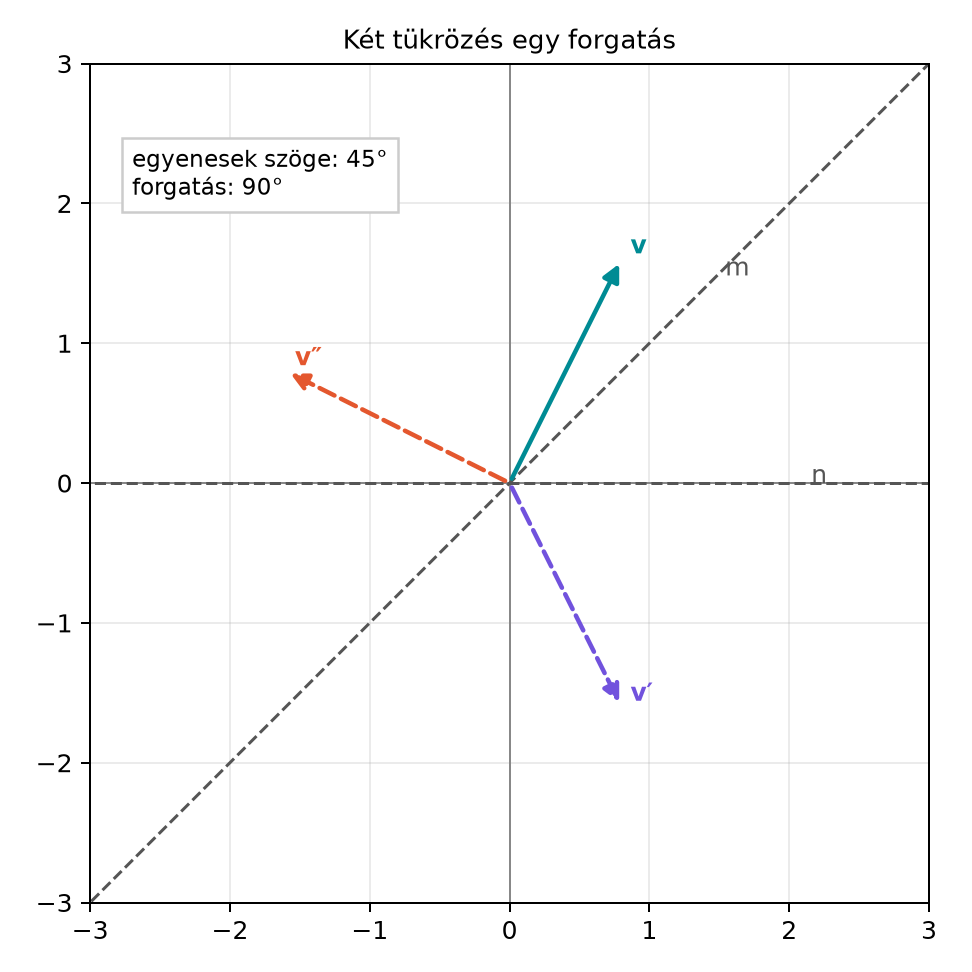

Az előző alfejezetben láttuk, hogy a síkban egy vektort egyetlen
egyenesre tükrözve a
szendvicsszorzat adja. Kézenfekvő kérdés: mi történik, ha egymás után
két különböző tengelyre tükrözünk? A mindennapi tapasztalat szerint két
tükrözés együtt mozgatja a síkot, de vajon ez is tükrözés, vagy valami
más? A tengelyek szögétől függően a kép elfordul: ha két, egymással
-os
szöget bezáró egyenesre tükrözünk, a végeredmény
-os
elfordulás. Ez a kapcsolat a geometriai algebrában rendkívül egyszerűen,
két vektor szorzataként jelenik meg, és ez az alapja a későbbi térbeli
rotoroknak is.
6.3.2 Szemléletes kép
Az ábrán két origón átmenő egyenest látunk: az
irányú egyenest, majd az
irányú egyenest. A
vektort először az
egyenesre tükrözzük, így kapjuk
-t,
majd
-t
az
egyenesre tükrözzük, így kapjuk
-t.
A két tükrözés eredménye ugyanaz, mintha
-t
a két egyenes szögének kétszeresével forgattuk volna el pozitív
irányban.

Két tükrözés egy forgatás - Az n
egyenesre, majd az m egyenesre tükrözünk. Az n és m közötti irányított
szög θ; a végső elfordulás 2θ.
Az ábrán
,
,
tehát
.
A vektor először az
egyenesre tükröződik, majd a
-os
egyenesre. A teljes elfordulás
lesz, ami a pozitív irányba (az
irányba) mutat.
6.3.3 Definíció: két tükrözés
kompozíciója
Definíció. Legyen
és
két egységvektor a
síkban. Az
,
majd az
egyenesre való tükrözés kompozícióját a
szendvicsszorzat adja, ahol a zárójel az első tükrözést jelöli, és a
második tükrözés az eredményre hat. Az így kapott transzformációt a két
tükrözés szorzatának vagy kompozíciójának nevezzük.
A kulcslépés az, hogy a középső
-t
két oldalról ugyanaz a páros szorzat,
és annak reverze
veszi körül. Ezt a páros szorzatot fogjuk azonosítani a forgatással.
6.3.4 Kidolgozott példa:
,
Válasszuk a legegyszerűbb derékszögű esetet:
és
,
a vektor pedig legyen
.
Első tükrözés az
egyenesre. A tükrözés szabálya
.
Számoljuk ki:
Használjuk a bázisszorzótáblát:
,
,
és
.
Így
Ez valóban tükrözés az
-tengelyre:
az
komponens előjelet vált, az
komponens változatlan.
Második tükrözés az
egyenesre. Most
:
Itt
,
és
,
mert
.
Tehát
A kiinduló vektor
volt, a végeredmény
.
Ez éppen a
-os
elfordulás, ami a két tengely
-os
szögének kétszerese. A geometriai szorzat nyelvén a két tükrözést
egyszerre is felírhatjuk:
Itt
,
és
,
tehát a szendvicsalak
.
A
a
-os
forgatás rotorja, mert
.
6.3.5 Két tükrözés általános
esetben
Legyen
és
két egységvektor, és jelölje
az irányított szöget
-től
-ig
a pozitív
irányban. Ekkor felírhatjuk a geometriai szorzatot:
A skalárszorzat
.
A külső szorzatot a bázisban kifejezve: ha
és
,
akkor
Ez az eredmény tetszőleges
-re
érvényes, mert a síkban minden egységvektor elforgatással az
-be
vihető, és a forgatás nem változtatja a külső szorzat nagyságát és
körüljárását. Tehát
A reverzió (a sorrend megfordítása) pedig
Most alkalmazzuk a két tükrözést:
Ez a kifejezés a szendvicsszerű alak. Ahhoz, hogy lássuk, valóban
forgatásról van szó, használjuk a bivektor és vektor
antikommutativitását:
,
amiből
következik. Ebből először
majd a teljes szendvicsszorzat:
Ez pedig a
vektor
szögű pozitív irányú forgatása.
6.3.6 Tétel és bizonyítás
Tétel. Legyen
és
két egységvektor a síkban, és legyen
az irányított szög
-től
-ig
a pozitív irányban. Az
-re,
majd az
-re
való tükrözés kompozíciója
szögű pozitív irányú forgatás, és felírható
Bizonyítás. A tükrözés definíciója alapján
()
a két tükrözés szorzata
Az
szorzatot kifejtjük a geometriai szorzat axiómái szerint:
Az egységvektorok közötti szög koszinusza
,
a külső szorzat pedig a fenti levezetés alapján
.
Ezért
A másik oldali szorzat a reverzió:
Ezzel
Mivel a bivektor antikommutál a vektorral,
,
amiből
.
Így
A Forgatás a síkban alfejezetben láttuk, hogy
éppen
szögű pozitív irányú forgatás. Ezért a kompozíció
szögű forgatás. ∎
6.3.7 A félszög megjelenése –
előretekintés a rotorokra
A fenti alakban a forgatás szöge
,
de a szendvicsben szereplő
exponensében csak
áll. Ez a „félszög” jelenség: a rotor a forgatás szögének felével
jellemezhető. Ha a forgatás szögét
-val
jelöljük, akkor
,
és a rotor
A forgatás pedig
Ez a szendvicsalak azért fontos, mert térben is működik: ott a rotor
a normált páros elem, azaz olyan
,
amelyre
,
és G(3)-ban minden ilyen rotor felírható
alakban, ahol
egyszerű egységbivektor. Nem minden páros fokszámú elem rotor: a
normáltság
()
szükséges. Több, egymástól független forgatási sík csak nagyobb,
legalább négydimenziós térben jelenik meg, ahol a rotor általában több,
nem kommutáló bivektor-exponenciális szorzata. A két tükrözésből való
levezetés tehát közvetlen hidat teremt a síkbeli komplex forgatás és a
térbeli rotorok között. Ezt a gondolatot visszük tovább a Két tükrözés = forgatás: a rotor és a
szendvicsszorzat alfejezetben.
Sorrendcsere a szorzatban. A geometriai szorzat
nem kommutatív, ezért
nem ugyanaz, mint
.
Az első előbb
-re,
majd
-re
tükröz; a második a fordított sorrendet jelenti, ami
irányú, azaz
szögű forgatást ad.
A forgatás szöge nem a tengelyek szöge. Sokan
azt gondolják, hogy a két tükrözés szöge
,
pedig valójában
.
A tengelyek
-os
szöge esetén a végső elfordulás
.
Előjel- és konvenciókeveredés. Forrásonként
eltérhet, hogy a szendvicsszorzatot
vagy
alakban írják. Ez a forgatás irányát változtatja meg. Ebben a könyvben a
rotor
alakú, és a forgatás pozitív iránya az
irány.
A bivektor és vektor antikommutativitásának
elfelejtése. A levezetés során kulcsfontosságú, hogy
.
Ha valaki azt hiszi, hogy az
kommutál a vektorral, a
helyett hibás
-t
kap.
6.3.9 Feladatok
6.3.9.1 (a) Fogalmi kérdés
Miért nem kommutatív a két tükrözés kompozíciója? Magyarázza el
geometriai és algebrai szempontból.
6.3.9.2 (b) Kézi számolás
Legyen
,
,
és
.
Számítsa ki a
szendvicsszorzatot, és igazolja, hogy az eredmény
-os
pozitív forgatásnak felel meg.
6.3.9.3 (c) Bizonyítási
feladat
Mutassa meg, hogy a szendvicsalak és a jobb oldali szorzás
azonossága,
,
tetszőleges
vektorra teljesül. Használja az
és
azonosságokat.
6.3.9.4 (d) Alkalmazási feladat
(Python – előkészíti a Két tükrözés = forgatás: a rotor és a
szendvicsszorzat-ot)
A ga2.py modulban már létezik a
rotate2(v, theta) függvény, amely
-t
számol. Írjon rövid kódot, amely ellenőrzi, hogy a két tükrözésből
kapott szendvicsszorzat ugyanazt az eredményt adja, mint a
rotate2 hívása
szöggel. (Használhatja a már definiált MV2 és
vec2 osztályokat.)
6.3.10 Megoldások
6.3.10.1 (a)
Geometriailag: ha előbb az
-re
tükrözünk, majd az
-re,
akkor a tengelyek irányított szöge
,
és a forgatás
pozitív irányú. Ha fordított sorrendben tükrözünk, a szög
,
és a forgatás
irányú, ami általában más eredmény. Algebrailag:
,
mert a geometriai szorzat nem kommutatív.
6.3.10.2 (b)
A megadott
egységvektor, mert
.
A szorzat
.
A reverz
.
A vektor
.
A szendvicsszorzat:
Most számoljuk ki a szendvicsszorzatot a
vektoron. Először
.
Mivel
,
,
ezért
.
Ezután
.
Itt
és
,
ezért az összeg
.
A szendvicsszorzatban szereplő
tényezővel
.
Ez egységnyi hosszú, és éppen az
pozitív
-os
elforgatása.
6.3.10.3 (c)
A bivektor antikommutációja alapján
és
,
amiből
.
Ebből következik
,
mert a koszinuszos és szinuszos tagokra az előjel megfordul. Ezután
.
6.3.10.4 (d)
A kód a ga2.py modult használja. A rotate2
függvény
-t
valósítja meg. A teszt:
from ga2 import MV2, vec2, rotate2import maththeta = math.pi/4# 45 fokn = vec2(1, 0)m = vec2(math.cos(theta), math.sin(theta))v = vec2(0, 1)# Két tükrözés szendvicsalakjav_double = m * (n * v * n) * m# Közvetlen forgatás 2*theta szöggelv_rot = rotate2(v, 2*theta)print("Két tükrözés:", v_double.e1, v_double.e2)print("Forgatás 2θ:", v_rot.e1, v_rot.e2)# Várt: mindkettő közel (-1, 0)
(A kód a mini könyvtár * operátorát használja, amely a
geometriai szorzatot valósítja meg. A várt kimenet
,
azaz
körül, 4 tizedesre kerekítve.)
6.3.11 Rövid összefoglaló
Két egymás utáni tükrözés a síkban forgatást eredményez. Ha az
egyenesre, majd az
egyenesre tükrözünk, akkor a kompozíció
Ha
az
-től
-ig
mért irányított szög, akkor a geometriai szorzat
,
és a reverz
.
A szendvicsszorzat így